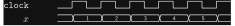
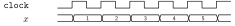

Streams#
As described in Overview, a stream is an inherently sequential collection. Each element in a stream is provided at a different clock cycle. It is not possible to read a stream out of order (skipping elements, rewinding, etc.).
Parts of a Stream#
Sirop streams have two parts: a “physical prefix” and a “logical part.” To see why, consider the following timing diagram:




What logical data does this stream carry? There is more than one possible interpretation:
If there is no latency, the data we care about is
[1, 2, 3, 4, 5, ...].If the latency is 1 clock cycle, the data we care about is
[2, 3, 4, 5, ...]. The preceding values ([..., 1]) should be ignored.If the latency is 2 clock cycles, the data we care about is
[3, 4, 5, ...]. The preceding values ([..., 1, 2]) should be ignored.etc.
In Sirop, these interpretations are expressed as follows:
0-cycle latency:
[]s ++ [1, 2, 3, 4, 5]s(or, more commonly, just[1, 2, 3, 4, 5]s)1-cycle latency:
[1]s ++ [2, 3, 4, 5]s2-cycle latency:
[1, 2]s ++ [3, 4, 5]setc.
The part before the ++ is the “physical prefix.”
We will see these outputs if we observe a design running on a physical FPGA, but they are not part of the logical output we care about.
The part after the ++ is the “logical part.”
Controlling the Physical Prefix#
Why even write down the physical prefix if we don’t care about it?
The answer is that, in some cases, we care about some properties of the physical prefix.
For example, we might want the generated VHDL entity to produce a valid output bit.
In the physical prefix, the valid bit must always be false.
In the logical part, the valid bit may be true or false.
const N: u32 = 4
// Return the square of the given u8.
// The output valid bit will be set to false in case of overflow.
accelerator[no_handshake] square = (s: Stm[(u8, bool), N]) =>
s
.StmMap(
@(data, valid) => (data*data, valid && data < 16),
/*head*/ (undefined:u8, false)
)
assert {
s = [(undefined:u8, false)]s ++ [
(2:u8, true), // OK
(3:u8, true), // OK
(4:u8, true), // OK
(16:u8, true) // Will overflow!
]s
}
yields [
( 4:u8, true),
( 9:u8, true),
(16:u8, true),
( 0:u8 /*ignored*/, false)
]s
// The "ignoring" clause specifies a bit mask to ignore parts of the output.
// 1 means ignore.
ignoring [
zeros:[(u8, bool)](),
zeros:[(u8, bool)](),
zeros:[(u8, bool)](),
(ones:[u8](), false)
]s
// All elements of the physical prefix must satisfy this predicate.
with prefix @(_, valid) => valid == false
Many of the built-in functions listed provide some way of controlling the physical prefix.
For instance, as shown in the sample code above, StmMap has a head parameter to set the initial value of the output register.
In the REPL, the physical prefix is hidden by default.
If it’s important to see the physical prefix, enable it by setting the special variable __show_prefix.
> __handshake = false
> [0:u8]s ++ [1:u8, 2:u8, 3:u8]s
[1:u8, 2:u8, 3:u8]s
> __show_prefix = true
> [0:u8]s ++ [1:u8, 2:u8, 3:u8]s
[0:u8]s ++ [1:u8, 2:u8, 3:u8]s